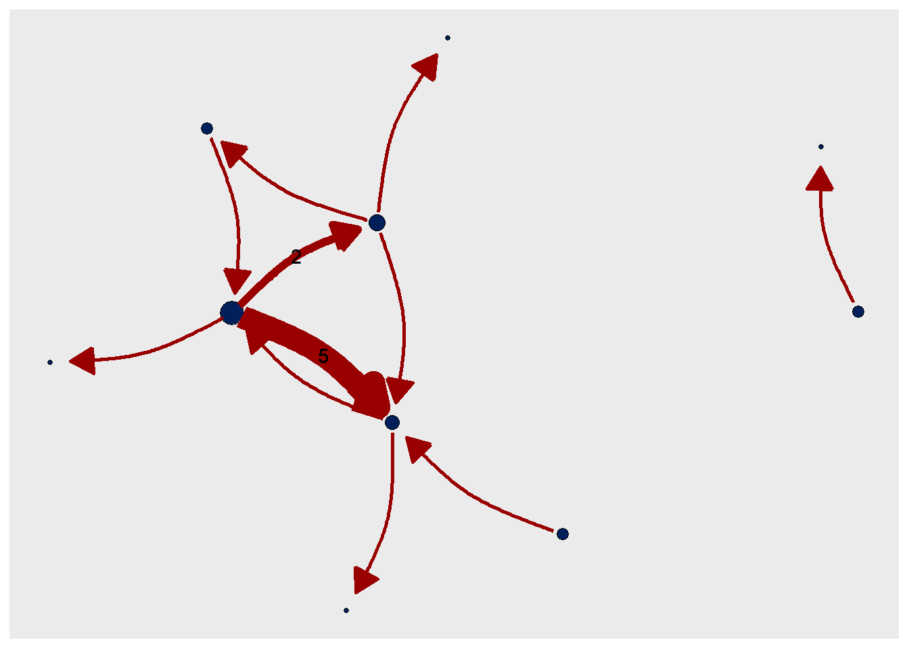
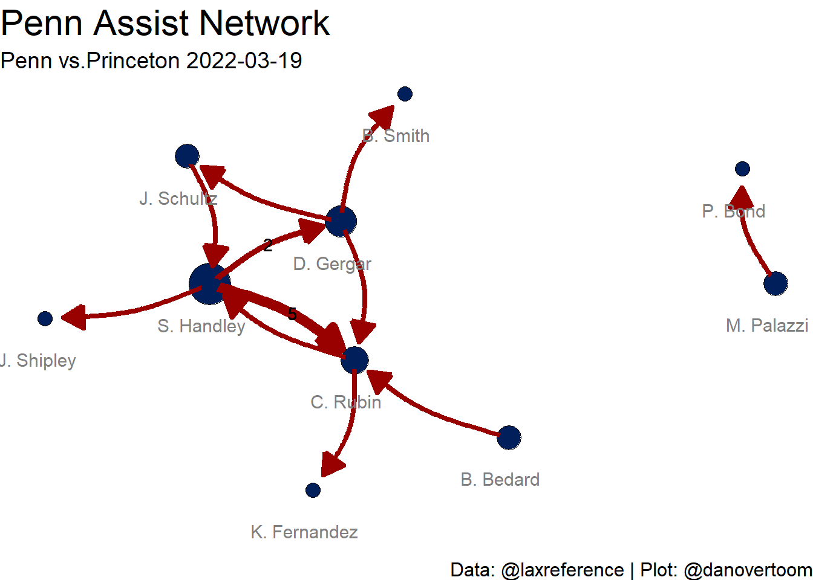
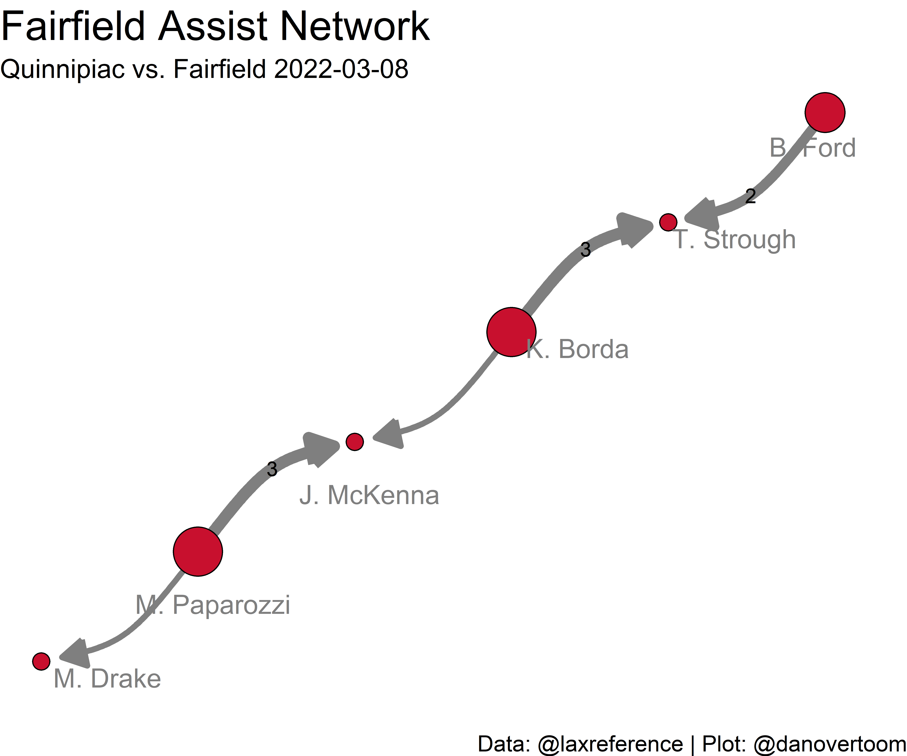

library(janitor)
library(tidyverse)The most exciting aspect of sports (in my opinion) is watching players score. Even die-hard fans of great defense must admit that the excitement of a defensive stop comes from preventing an opposing player from scoring. A high powered offense is a sight to be seen. In free-flowing sports scores can come from excellent individual effort, precision passing leading to a catch and score, or as is often the case a combination of the two.

Today we are going to focus on passing. Specifically, assists or the successful passes that lead directly to a score. When watching free-flowing sports such as basketball, hockey and lacrosse, fans will be well aware of the players that execute passes which make it possible for other players to score. An observant fan may take note of which players have a particularly productive passing-scoring relationship throughout a game or a season. An even deeper level of fan may wonder how players and teams work together through passing to scoring. Then to take it a step further ask questions such as how effective are these scoring relationships? And, how do they grow and develop throughout a game/season either based on team philosophy, chemistry or matchups?
For those fans…allow me to introduce you to Assist Networks.
Why Assist Networks?
The concept of Assist Networks was introduced to me by Positive Residual (@presidual) on Twitter. I highly recommend checking out their site for a range of basketball analytics and data visualizations, whether you are a basketball fan or just an analytics fan or even both. When I saw this method of visualizing the assister-shooter combinations observed in an NBA basketball game, my eyes lit up with desire to apply this concept to the sport I love - lacrosse!
The ability to visually show the relationships between players who throw passes that lead to goals is immensely valuable when attempting to understand how teammates interact effectively. While there are constant interactions between players on the field (both direct and indirect), assist networks focus on “successful passing interactions”. In this case we define a successful passing interaction as a pass that directly aides in the recipient scoring a goal, i.e. an assist. Charting these interactions within a team gives us insight on the identity of the team’s offense. We can quickly see how reliant a team is on having passes generate scoring. Taking it a step further we can see who the main offensive contributors are from both a passing and scoring perspective.
Using assist networks, we will attempt to better understand the teammate-to-teammate passing interactions that ultimately lead to a goal being scored. When focusing in on a single game’s assist data, we can quickly see how effective or ineffective a team was at generating successful passing interactions against a specific defense. While a single game can answer some questions, it can also generate more questions. Such as:
- Was this result strictly matchup based?
- Is this result “matchup proof”?
- Will these teammate interactions grow stronger or evolve into something different?
To answer these questions and more, we can look at assist networks from game to game, across a season, for a team’s season as a whole, all games against a certain defense, as well as focusing on a certain player or group of players over multiple seasons. Taking a deeper look into the assist network characteristics of a team can lead to a greater understanding of the team’s style and philosophy. Looking at the assist networks for a team year-over-year can show how team strategies change (or don’t change) based on player movement and players growing and developing.
Now that we have an idea of questions assist networks can help us answer, let’s build some assist networks. All data in this post is supplied by Lacrosse Reference and can be easily accessed using their PRO subscription. I highly recommend subscribing and checking out their site. They have something for every lacrosse fan whether you want to keep track of a certain team or player or further your lacrosse knowledge by diving deep into the statistics.
Methodology
igraph + ggraph = assist networks
There are two key packages that we will utilize to create the network visualizations - igraph and ggraph. The network object is created with igraph::graph_from_data_frame and then plot using ggraph and the associated family of functions. While network objects can be plotted directly with igraph, in this post we choose to stick to the more familiar plotting framework of ggraph. As the name suggests ggraph uses the grammar that ggplot2 users have come to know and love.
The basic network visualization workflow we follow is:
- Gather and clean data from Lacrosse Reference
- Create network nodes and links that form Network object (
igraph) - Plot the network (
ggraph)
Let’s get started by loading our data cleaning packages:
Gather and Clean Data
While a Lacrosee Reference PRO subscription does not grant you direct database access, it does give you the next best thing - a GUI to query their database! So, we head over to Lacrosse Reference to grab all our data. For this exercise we are focused on the 2022 season. So we will download the CSV files for players, teams, games and assists data from both Men’s and Women’s DI Lacrosse for the 2022 season and bring them into our R session (please note for the purposes of this post we are only using a partial data pull).
players_data <- read.csv("data/data_players_2022.csv")
teams_data <- read.csv("data/data_teams.csv")
games_data <- read.csv("data/data_games_2022.csv")
assist_data <- read.csv("data/data_assists_2022.csv")Since this data is taken from a database, we need to clean it up a bit. The data is scrapped from the NCAA play by play logs and therefore has some imperfections. A major imperfection is that some records are duplicated; therefore, we must be sure to filter them out. We will use the players, teams and games data to “de-code” the player, team and game id’s in the assist data so we can easily access the assist data we want for our network.
#clean up player data into player list with player_id
# cahnge player name from full name to first initial last name for plot labeling purposes
players_data <- players_data %>%
clean_names() %>%
rename(player_id = id) %>%
separate(player, into = c("player_first", "player_last"), extra = "merge", sep = " ") %>%
mutate(player = paste0(str_sub(player_first, start = 1, end = 1), ". ", player_last)) %>%
select(player, player_id)
#clean up teams data
teams_data <- teams_data %>%
clean_names() %>%
rename(team_id = id) %>%
select(-league)
#clean up games data with help of teams data
games_data <- games_data %>%
clean_names() %>%
rename(game_id = id) %>%
left_join(., teams_data, by = c("home_id" = "team_id")) %>% #add home team name, etc.
rename(home_team_short = short_code, home_team = display_name) %>%
left_join(., teams_data, by = c("away_id" = "team_id")) %>% #add away team name, etc.
rename(away_team_short = short_code, away_team = display_name)
#clean up assist data using clean players, teams and games data
assist_data <- assist_data %>%
clean_names() %>%
left_join(., players_data, by = c("shooter_id" = "player_id")) %>% #add shooter name
rename(shooter = player) %>%
left_join(., players_data, by = c("assister_id" = "player_id")) %>% #add assister name
rename(assister = player) %>%
left_join(., games_data, by = "game_id") %>%
distinct() #verify that no duplicates are in the dataNow that we have clean assist data for both leagues for the 2022 season, we can begin to construct an assist network plot. The question now is how to select a game of interest. There a variety of factors that go into an “interesting” game for assist data. Maybe you are clamoring for me to choose a game that involves your favorite team, or one your favorite players performed particularly well in or perhaps you have a specific question you want answered with data. All of these are great ideas and assist networks can meet all of those desires and more. For the purposes of this demo we are going to look for a game with many assists and assister-shooter combinations so we can see the full power of an assist network. Let’s take a peek into the assist data and see what we can find.
glimpse(assist_data)Rows: 15,284
Columns: 29
$ possession_seq <dbl> 1, 1, 2, 2, 1, 1, 1, 1, 4, 1, 1, 2, 1, 2, 3, 1, 1…
$ game_state <dbl> 0, 1, -3, -2, 2, 3, 4, 5, -6, 2, 4, 6, -8, -7, -6…
$ goalie_id <int> 2132, 2132, 420, 420, 2132, 2132, 2132, 2132, 420…
$ shooter_id <int> 424, 17034, 16956, 1623, 433, 1660, 424, 428, 216…
$ possession_elapsed <dbl> 14, 58, 24, 12, 0, 36, 28, 64, 66, 38, 51, 12, 14…
$ man_up <int> 0, 0, 0, 0, 0, 0, 0, 0, 0, 0, 0, 0, 0, 1, 0, 0, 0…
$ team_id <int> 56, 56, 53, 53, 56, 56, 56, 56, 53, 37, 37, 37, 3…
$ assister_id <int> 431, 428, 16959, 16959, 17034, 433, 428, 429, 169…
$ time_elapsed <dbl> 14, 811, 1049, 1061, 2100, 2341, 2369, 2464, 3221…
$ team_odds <dbl> 0.573, 0.738, 0.281, 0.476, 0.823, 0.881, 0.937, …
$ game_id <int> 10044, 10044, 10044, 10044, 10044, 10044, 10044, …
$ shot_clock_remaining <dbl> 66, 20, 67, 68, 46, 34, 52, 4, 34, 39, 29, 75, 66…
$ shooter <chr> "S. Goldsmith", "T. Dooley", "D. Macdonald", "B. …
$ assister <chr> "N. Rockefeller", "C. Klepper", "C. Della Rocco",…
$ status <chr> "completedFromNCAA", "completedFromNCAA", "comple…
$ league <chr> "NCAA D1 Men", "NCAA D1 Men", "NCAA D1 Men", "NCA…
$ pregame_home_wp <dbl> 0.568228, 0.568228, 0.568228, 0.568228, 0.568228,…
$ away_id <int> 53, 53, 53, 53, 53, 53, 53, 53, 53, 36, 36, 36, 3…
$ traversals_70_30 <int> 0, 0, 0, 0, 0, 0, 0, 0, 0, 1, 1, 1, 1, 1, 1, 1, 1…
$ tension_game_score <dbl> 75, 75, 75, 75, 75, 75, 75, 75, 75, 200, 200, 200…
$ home_id <int> 56, 56, 56, 56, 56, 56, 56, 56, 56, 37, 37, 37, 3…
$ elo_transfer <dbl> 17.300, 17.300, 17.300, 17.300, 17.300, 17.300, 1…
$ home_score <int> 9, 9, 9, 9, 9, 9, 9, 9, 9, 21, 21, 21, 21, 21, 21…
$ game_date <chr> "2022-01-29", "2022-01-29", "2022-01-29", "2022-0…
$ away_score <int> 4, 4, 4, 4, 4, 4, 4, 4, 4, 12, 12, 12, 12, 12, 12…
$ home_team_short <chr> "MER", "MER", "MER", "MER", "MER", "MER", "MER", …
$ home_team <chr> "Mercer", "Mercer", "Mercer", "Mercer", "Mercer",…
$ away_team_short <chr> "BELL", "BELL", "BELL", "BELL", "BELL", "BELL", "…
$ away_team <chr> "Bellarmine", "Bellarmine", "Bellarmine", "Bellar…Alright, that is a lot of information and a good chunk of assists to sort though. Let’s count the total number of assister-shooter combinations and the number of unique assister-shooter combinations for each game. Since assist networks are focused on a single team we will do this by both home and away team so that we get counts on the team-game level.
home_game_assist_info <- assist_data %>%
filter(team_id == home_id) %>% #gather records for home team only
group_by(game_id, home_team, league) %>%
count(assister, shooter) %>%
summarise(total_assists = sum(n), num_assist_combos = n()) %>%
arrange(desc(total_assists))
head(home_game_assist_info)# A tibble: 6 × 5
# Groups: game_id, home_team [6]
game_id home_team league total_assists num_assist_combos
<int> <chr> <chr> <int> <int>
1 10159 Mercer NCAA D1 Men 21 17
2 10093 Bucknell NCAA D1 Men 19 18
3 10162 VMI NCAA D1 Men 19 19
4 10350 Boston U NCAA D1 Men 18 15
5 10012 Georgetown NCAA D1 Men 16 14
6 10014 Georgetown NCAA D1 Men 16 16away_game_assist_info <- assist_data %>%
filter(team_id == away_id) %>% #gather records for away team only
group_by(game_id, away_team, league) %>%
count(assister, shooter) %>%
summarise(total_assists = sum(n), num_assist_combos = n()) %>%
arrange(desc(total_assists))
head(away_game_assist_info)# A tibble: 6 × 5
# Groups: game_id, away_team [6]
game_id away_team league total_assists num_assist_combos
<int> <chr> <chr> <int> <int>
1 10158 Richmond NCAA D1 Men 18 16
2 10194 Jacksonville NCAA D1 Men 17 16
3 10352 Yale NCAA D1 Men 17 13
4 10172 LIU NCAA D1 Men 16 11
5 10259 Penn NCAA D1 Men 16 11
6 10297 Vermont NCAA D1 Men 16 16Some perhaps unexpected names at the top of the list, which makes this exercise all the more interesting. There is no wrong game to pick, and it is understandable to want to start plotting all of them. Like any good cooking show, we have a beautiful cake waiting in the oven for you. Let’s pick the Penn vs. Princeton overtime thriller and look at the assist network for the cardiac Quakers.
Create Network Object
Our data is clean. We have selected the game and the team we would like to analyze the assist network for. Let’s create our network object using the igraph package.
library(igraph)A network object consists of two major pieces: nodes and links. For the purpose of assist networks, our nodes will be players that were either the assister or shooter in the assist interactions and our links will represent the frequency of those interactions between two players.
Let’s gather our network data by filtering our clean assist data to only the records for Penn from the Penn vs. Princeton game on March 19th, 2022.
#we take the game id from our away_game_assist_info tbl and select only Penn records
penn_ntwk_data <- assist_data %>%
filter(game_id == 10259 & team_id == away_id)Now we are ready to create our network nodes and links!
Network Nodes
The nodes of a network (also referred to as vertices) serve as the beginning points or endpoints (or both) of the interaction you are analyzing. In the case of an assist interaction, nodes are defined as either the player scoring the goal (shooter) or the player that is credited with the assist (assister). Therefore, we want our nodes dataframe to include all players that were either assisters or shooters in the game with no duplicates. When creating our nodes dataframe, we want the first column to consist of all node IDs (assisters/shooters) and all subsequent columns can contain node attributes. In this case our node attributes include:
- num_interactions - the number of interactions for a player. We define this as the number of assisted scoring plays the player is a part of, which is also the sum of their assists and goals (referred to as points in lacrosse).
- num_assists - the number of assists a player recorded in the game.
- player_name - the player name associated with the node. In our case this column is a duplicate of the node id column. This is necessary to use the player’s name as both a node id and a node attribute.
This node dataframe contains the information we need to begin building the network as well as some key attributes that will add context to our network visualization. Below is the code to create the network nodes dataframe:
penn_cnt_assists <- penn_ntwk_data %>%
select(assister) %>%
count(assister) %>%
rename(num_assists = n)
penn_ntwk_nodes <- penn_ntwk_data %>%
select(assister, shooter) %>% #need to have all shooters/assisters listed as vertices
pivot_longer(everything(), values_to = "assister_shooter") %>%
select(-name) %>%
count(assister_shooter) %>%
rename(num_interactions = n) %>%
left_join(., penn_cnt_assists, by = c("assister_shooter" = "assister")) %>%
mutate(num_assists = replace_na(num_assists, 0)) %>%
distinct() %>%
mutate(player_name = assister_shooter) Network Nodes are ready to go! Time to link them up.
Network Links
The links of a network show how the nodes connect (or don’t connect) to each other. Network links can be directed (typically with an arrow to denote where link starts and ends) or un-directed, based on the nature of the interaction being described. For our assist network, we want to show which node is the assister and which node is the shooter. The link starting at the assister and ending with an arrow pointing to the shooter, provides a logical visual representation of the assist interaction. Within a game environment, it is not uncommon that players would classified as both an assister and a shooter. So, we expect to see two-way interactions in our networks (this also adds another layer of analysis to observe the amount of two-way interactions or lack thereof). In the case that two players assisted each other, the link will be shown with an arrow on each end to indicate each player received an assist from the other.
It is common that a player may assist another player multiple times over the course of a game. When we go to visualize these, we can choose to either show a link for every connection between the two players or show the link once and add a label to show the number of times the link occurred. We will go the route of showing a link with a number denoting the frequency in order to have a cleaner looking visualization. Therefore, we want to create a dataframe that shows each assister-shooter combination with the frequency of each. Since it is redundant to label links that only occur once, we will filter this dataframe to include frequencies greater than one. Now, we are ready to create our network links dataframe. Similarly to our network links dataframe, the first two columns of the network links dataframe will be populated with the network link IDs. The first column should contain the node ID where the link will start, with the second column indicating the node ID at which the link ends. In the case of our assist network the first column will contain all assister node IDs and the second column will contain all shooter node IDs. The subsequent columns in the network links dataframe will be used to store any link attributes that we will need for plotting or analysis. For our assist network we will bring in the following attributes:
- assister_shooter_freq - indicates the number of times the assister-shooter combination occurred within the game being analyzed.
- assister_shooter_freq_label - takes the number of times the assister-shooter combination occurred within the game and replaces any frequencies equal to one with a blank. This will be used to label each link and avoids unnecessary labeling.
Below is the code to create the network nodes dataframe:
penn_assister_shooter_combo <- penn_ntwk_data %>%
select(assister, shooter) %>%
count(assister, shooter) %>%
rename(assister_shooter_freq = n) #%>%
#filter(assister_shooter_freq > 1)
penn_ntwk_links <- penn_ntwk_data %>%
select(assister, shooter) %>% #gather all connections between assisters and shooters
left_join(., penn_assister_shooter_combo, by = c("assister", "shooter")) %>%
mutate(assister_shooter_freq_label =
if_else(assister_shooter_freq == 1, "",
as.character(assister_shooter_freq))) #%>%
#mutate(assister_shooter_freq = replace_na(assister_shooter_freq, 0))Network Links are ready to go! Now we can create our network object.
Nodes + Links = Network
Now that we have prepared our network nodes and links, our network object can be created. This is where the igraph package comes in. We will use the igraph::graph_from_data_frame() function to form the network object. The network links dataframe is supplied to the d argument and the network nodes dataframe to the vertices argument. As discussed in the network links section, we want to show the direction of our network links so we set the directed argument to TRUE.
penn_ntwk <- graph_from_data_frame(d=penn_ntwk_links, vertices=penn_ntwk_nodes, directed=T) Our network is ready to be plotted!
Plot Network
So far, we have * brought in our assist data * chosen a game to analyze * prepared the data * created our igraph network object.
We can now plot our network and see the assist network for Penn during the Princeton-Penn game from March 19th, 2022. There is network graphing functionality contained within the igraph package (helpful tutorial is here). However, I am an avid fan of the tidyverse who is used to and comfortable with ggplot2 and the ability to build plots layer by layer. So, I was delighted to discover the ggraph package that is designed to bring the same flexible approach to building up plots layer by layer and apply it to visualizing networks. For the purposes of this post, we will be plotting our network with ggraph. I recommend exploring the plotting mechanisms in igraph as well if you have the time.
library(ggraph)Users of ggplot2 will find the following method of building our plot layer by layer familiar and comfortable. For those not as familiar, I expect it will also be relatively easy to follow along with and will hopefully inspire you to dive head first into the R/tidyverse pool. Our plot will be composed of the following layers:
- Base Layer - plot object using
ggraph::ggraph() - Node Layer - using
ggraph::geom_node_point() - Links Layer - using
ggraph::geom_edge_arc() - Node Label Layer - using
ggraph::geom_node_text() - Styling Layer - using common
ggplot2styling functions
The only network specific data attributes we are missing in our network object are the colors that we want our nodes and links to be in the plot. We will use the teamcolors package to provide the hexcodes for Penn’s primary and secondary colors.
Base Layer
We begin our netwok plot assembly by initializing the plot with the ggraph() function. Our igraph network object is supplied to the first argument of the function. Then we specify the network plot layout we would like to use. Take a look at the ggraph() documentation for a list of layout options. For our Penn Assist Network plot we chose the “kk” layout from the igraph layout library. The “kk” layout uses the spring-based algorithm by Kamada and Kawai to place nodes. The key requirement for our node layout is that all nodes are well spaced out. After playing with different layouts, the “kk” looked to give us a visually appealing spread of nodes across a variety of assist networks. I encourage you to try a few out and find the one that suits your needs the best.
penn_ntwk_plot <- ggraph(penn_ntwk, layout = "kk")
penn_ntwk_plot
As expected, we see that the initialization of the plot object does not render any actual plot elements. We will add them layer by layer.
Node Layer
Now that our plot object is initialized, we can start adding plot attributes. First, we want to draw in our network nodes using ggraph::geom_node_point(). For the size of the nodes we will use the number of assists the player recorded. Since the number of assists a given player could have in a game is relatively small, we add a weight to the size input. This allows the nodes to be more visible while maintaining the visual indicator of whether a player had more or less assists than other players on their team. We use the filled in circle shape for our node and set the fill color to Penn’s secondary color using the teamcolors package.
penn_ntwk_plot <- ggraph(penn_ntwk, layout = "kk") +
geom_node_point( # add nodes to the plot
aes(size = num_assists + 50),
shape = 21,
fill = teamcolors::team_pal("Penn", 2), #sets nodes color to Penn's secondary color
show.legend = FALSE
)
penn_ntwk_plot
Our nodes are now drawn in, put at this point our plot does not show anything useful.
Links Layer
With our nodes in place, it is time to draw the links between them using ggraph::geom_edge_arc()! There are a few different geom_edge_* options in the ggraph package. We chose the geom that uses an arced line to draw the links, as this option gave us the cleanest visual. The endpoint of our link will have an arrow on it to help denote the direction of the link, as we have established the importance of that detail in the context of an assist network. The strength of the link refers to the bend of the curve. The color of the link is set to Penn’s primary color using the teamcolors package. Another important detail is the link label, as we have decided to draw a single link between nodes regardless of the number of links that exist between the nodes. Our link label will denote the number of links between the nodes or in our context the number of times player x assisted player y. We will also draw a thicker arc between nodes where there are multiple links to provide a visual context to the relationship between nodes (thicker arc = more assists between players).
penn_ntwk_plot <- ggraph(penn_ntwk, layout = "kk") +
geom_node_point( # add nodes to the plot
aes(size = num_assists + 50),
shape = 21,
fill = teamcolors::team_pal("Penn", 2), #sets nodes color to Penn's secondary color
show.legend = FALSE
) +
geom_edge_arc( #add links to the plot
arrow = arrow(length = unit(5, 'mm'), type = "closed"),
start_cap = circle(2, 'mm'),
end_cap = circle(4, 'mm'),
strength = 0.15,
color = teamcolors::team_pal("Penn", 1), #sets links color to Penn's primary color
aes(label = assister_shooter_freq_label,
edge_width = assister_shooter_freq),
show.legend = FALSE
)
penn_ntwk_plot
Now our plot is starting to take shape!
Node Label Layer
Our nodes and our links are drawn in and we can see the shape of our network. However, we have no context on any of our network interactions. We want to know which player assisted which shooter. So, we will use ggraph::geom_node_text() to add labels to our nodes by assigning player names to the label argument. We can specify the size and color of the label as well as the position of the label in relation to the node using nude-x and nudge_y. It takes a bit of trail and error to get the label alignment just right, so that most every label is easy to read and easily marks the correct node.
penn_ntwk_plot <- ggraph(penn_ntwk, layout = "kk") +
geom_node_point( # add nodes to the plot
aes(size = num_assists + 50),
shape = 21,
fill = teamcolors::team_pal("Penn", 2), #sets nodes color to Penn's secondary color
show.legend = FALSE
) +
geom_edge_arc( #add links to the plot
arrow = arrow(length = unit(5, 'mm'), type = "closed"),
start_cap = circle(2, 'mm'),
end_cap = circle(4, 'mm'),
strength = 0.15,
color = teamcolors::team_pal("Penn", 1), #sets links color to Penn's primary color
aes(label = assister_shooter_freq_label,
edge_width = assister_shooter_freq),
show.legend = FALSE
) +
geom_node_text( # add node labels to plot
aes(label = player_name),
size = 4,
color = "gray50",
#repel = T,
nudge_x = -0.05,
nudge_y = -0.35
)
penn_ntwk_plot
Our plot now has the necessary context!
Styling Layer & Full Plot
Now that our plot is fully constructed, we want to clean it up a bit. First, we add scales to smooth the look of our nodes and links. Next, we add titles and captions (always cite your data source!) to describe the key details of the plot.
penn_ntwk_plot <- ggraph(penn_ntwk, layout = "kk") +
geom_node_point( # add nodes to the plot
aes(size = num_assists + 50),
shape = 21,
fill = teamcolors::team_pal("Penn", 2), #sets nodes color to Penn's secondary color
show.legend = FALSE
) +
geom_edge_arc( #add links to the plot
arrow = arrow(length = unit(5, 'mm'), type = "closed"),
start_cap = circle(2, 'mm'),
end_cap = circle(4, 'mm'),
strength = 0.15,
color = teamcolors::team_pal("Penn", 1), #sets links color to Penn's primary color
aes(label = assister_shooter_freq_label,
edge_width = assister_shooter_freq),
show.legend = FALSE
) +
geom_node_text( # add node labels to plot
aes(label = player_name),
size = 4,
color = "gray50",
#repel = T,
nudge_x = -0.05,
nudge_y = -0.35
) +
scale_edge_width_continuous(range = c(1.5, 3)) +
scale_size_continuous(range = c(4, 12)) +
theme_void() +
labs(
caption = "Data: @laxreference | Plot: @danovertoom",
title = "Penn Assist Network",
subtitle = "Penn vs.Princeton 2022-03-19"
) +
theme(
plot.title = element_text(size = 22),
plot.subtitle = element_text(size = 14),
plot.caption = element_text(size = 12)
)
penn_ntwk_plot
We can clearly see that Sam Handley was the focal point of the Penn offense in this game with 3 goals and 8 assists. The Handley-Rubin connection was particularly effective, with Rubin (7G, 2A) scoring 5 times off of Handley passes and resulting in six total assisted goals between the two. Dylan Gregar was the third major offensive contributor (2G, 3A) with all of his points coming from assist interactions.
Now that our network plot is complete and analyzed, it is ready to be shared! It is common that we would want a PNG image file of the network plot, so it can easily be shared (tweeted). We will use ggsave() to create the file and save it somewhere useful.
ggsave(filename = "plots/penn_princeton_ntwk_2022_03_19.png", plot = penn_ntwk_plot, dpi = 800)With our plot saved, we can now use it pretty much anywhere - like as the preview image for this blog post!
Function Workflow & Examples
In this post we have laid out how to create an assist network plot from gathering and cleaning the data to creating the network and plot using igraph and ggraph. Assist Networks are a visualiztiuon that we would likely want to create often for a given game. Since there are a lot of NCAA lacrosse games in a given season, we want this workflow to be as quick and easy as possible. Since, the steps are relatively simple and can be relatively plug and play for any team or game this is a great process to wrap into a series of functions that we can easily feed game data into.
The workflow consists of three sets of functions. First, we will use a set of “cleaning” functions to load and prepare our data to be used in an assist network.
players_data <- read.csv("data/data_players_2022.csv") %>%
clean_player_data()
teams_data <- read.csv("data/data_teams.csv")
games_data <- read.csv("data/data_games_2022.csv") %>%
clean_games_data(., teams_data)
assist_data <- read.csv("data/data_assists_2022.csv") %>%
clean_assist_data(., players_data, games_data)Next, we define our game and team information for the assist network we want to create.
game_home_team <- "High Point"
game_away_team <- "North Carolina"
game_date <- "2022-03-20"
game_assist_team <- "away"
game_assist_ntwk_tm <- ifelse(game_assist_team == "home", game_home_team, game_away_team)Then, we use a set of “network” functions to form our network object.
#get network data for a specific game
game_ntwk_data <- get_network_data_game(assist_data, game_home_team, game_away_team, game_date, game_assist_team)
#gather network nodes
game_ntwk_nodes <- get_network_nodes(game_ntwk_data)
#gather network links
game_ntwk_links <- get_network_links(game_ntwk_data)
#create network object for specific game selected above
game_curr_ntwk <- graph_from_data_frame(d=game_ntwk_links, vertices=game_ntwk_nodes, directed=T)Now we finish our workflow with a set of “plotting” functions to draw our assist network.
#plot network
game_curr_ntwk_plot <-
base_ntwk_plot_game(game_curr_ntwk, teamcolors::team_pal("North Carolina", 1), teamcolors::team_pal("North Carolina", 2)) +
ntwk_node_label("gray50", 0.2,-0.18) +
labs(
caption = "Data: @laxreference | Plot: @danovertoom",
title = paste(game_assist_ntwk_tm, "Assist Network"),
subtitle = paste(game_away_team, "vs.", game_home_team, game_date)
) +
theme(
plot.title = element_text(size = 22),
plot.subtitle = element_text(size = 14),
plot.caption = element_text(size = 12)
)
game_curr_ntwk_plot
ggsave(filename = paste0("plots/", game_date, "_", game_home_team, "_", game_away_team, ".png"), plot = game_curr_ntwk_plot, dpi = 800)With the function workflow in place we can change the game/team information to quickly and easily create as many assist networks as we need or want! So here is a small dump of assist networks from the beginning of the 2022 season:



So Now What?
Now that we know what assist networks are and how to create them, what is next? I am excited to explore assist networks both within a current NCAA lacrosse season, but also taking a look back at historical seasons. I believe that assist networks can be a valuable exploratory analysis tool, that allows us to ask deeper questions. Assist networks also hold value in digesting the results of games week to week and serve as an analytical check on observations that come from watching a game either in person or on film. In regards to making these visualizations and analysis more accessible to the lacrosse community as a whole, I plan to continue to develp methods of providing quick and easy access to assist networks. One thought is to wrap the assist network functions in an R package. This may also lead me to build my first shiny application….stay tuned.
Citation
BibTeX citation:
@online{overtoom2022,
author = {Overtoom, Dan},
title = {Visualizing {Assist} {Networks} in {Lacrosse}},
date = {2022-08-12},
url = {https://danalytics.blog/posts/2022-08-12-visualizing-assist-networks-in-lacrosse/},
langid = {en}
}
For attribution, please cite this work as:
Overtoom, Dan. 2022. “Visualizing Assist Networks in
Lacrosse.” August 12, 2022. https://danalytics.blog/posts/2022-08-12-visualizing-assist-networks-in-lacrosse/.